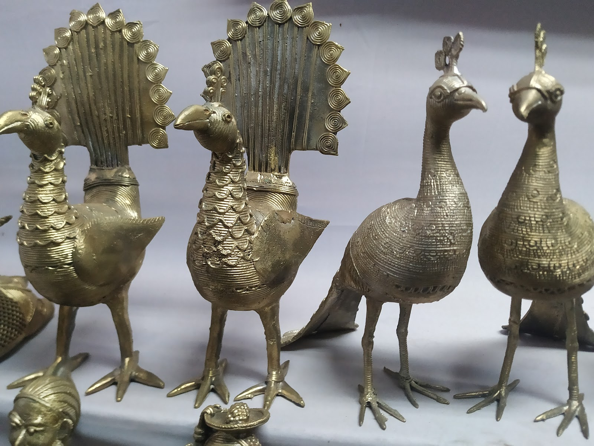

📖 Origin & Tradition
Brass and Bell Metal Crafts hold a special place in the cultural heritage of Assam and Odisha.
In Assam, the town of Sarthebari is famous for its traditional brass and bell metal works, used for making utensils, ceremonial items, and ornaments.
In Odisha, the craft is deeply tied to religious practices, with artisans producing temple bells, lamps, and decorative items for centuries.
💡 Did You Know?
🔔 Assam’s bell metal craft is considered one of the oldest metal crafts in India.
🍲 Brass utensils are still widely used in Assamese households for their durability and health benefits.
🕉️ Odisha’s temples, like Puri Jagannath Temple, use handcrafted bells made by local artisans.
🌍 These crafts are eco-friendly and sustainable, with generations of families continuing the tradition.
🎨 Popular Creations
Utensils – Plates, bowls, and water pots made from brass & bell metal.
Temple Bells – Famous in Odisha for their distinct sound & purity.
Ceremonial Items – Conch holders, lamps, and ritual containers.
Decorative Crafts – Ornamental showpieces with fine detailing.
🎯 Quick Quiz:
Which town in Assam is most famous for its Brass & Bell Metal crafts?